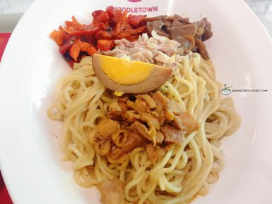
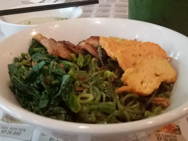
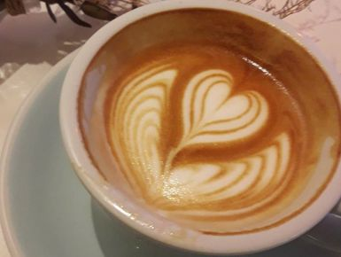
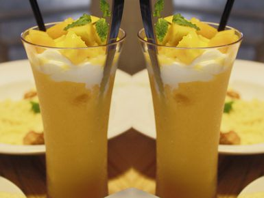
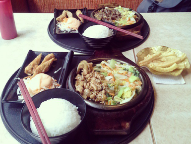
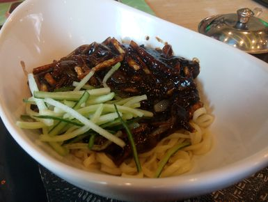
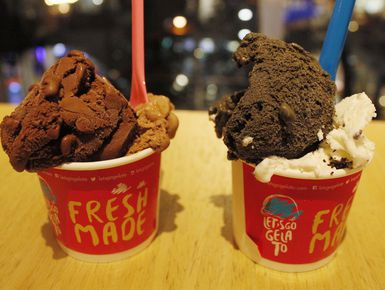

Tempat makan di Cihampelas Bandung bisa dibilang merupakan kuliner favorit bagi warga Bandung. Di sini berderet cafe dengan suasana yang cocok untuk nongkrong di Bandung. Menu yang ditawarkan pun beragam, mulai dari kopi, dessert, dan cemilan lainnya. Selain itu, terdapat pula salah satu mall terkenal di Bandung yang berada di Jalan Cihampelas ini. Bila akhir pekan tiba, Jalan Cihampelas ini selalu dipenuhi antrian mobil orang-orang yang ingin berwisata belanja ataupun kuliner di Bandung.
Review 10 Menu Kuliner Terfavorit yang berada di Cihampelas Bandung

1. Noodle Town
Lokasi berada di Cihampelas Walk, Lantai Lower Ground, Broadway Street
Jl. Cihampelas No. 160, Cihampelas, Bandung
Senin - Minggu (10:00 - 22:00)
Tidak Ada No Telepon
Harga Rp. 50.000 - Rp. 100.000
2. Hokkaido Bosh Cheesetart
Lokasi berada di Cihampelas Walk, Lantai Ground
Jl. Cihampelas No. 160, Cihampelas, Bandung
Senin - Minggu (10:00 - 22:00)
Tidak Ada No Telepon
Harga Di bawah Rp. 50.000

3. Chopstix
Lokasi berada di Cihampelas Walk, Lantai Ground, Young Street
Jl. Cihampelas No. 160, Cihampelas, Bandung
Senin - Minggu (10:00 - 22:00)
Tidak Ada No Telepon
Harga Rp. 50.000 - Rp. 100.000

4. Cremelin
Lokasi berada di Cihampelas/Cafe
Jl. Abdul Rivai No. 3A, Cihampelas, Bandung

5. Gorjeus
Lokasi berada di Cihampelas/Cafe
Jl. Cihampelas No. 60, Cihampelas, Bandung

6. Gokana
Lokasi berada di Cihampelas/Jepang Cihampelas Walk, Lantai Lower Ground, Broadway Street
Jl. Cihampelas No. 160, Cihampelas, Bandung
7. Warunk UpNormal
Lokasi berada di Cihampelas Walk, Lantai Lower Ground
Jl. Cihampelas No. 160, Cihampelas, Bandung
8. Starbuck Coffee
Lokasi berada di Cihampelas Walk, Lantai Lower Ground
Jl. Cihampelas No. 160, Cihampelas, Bandung

9. Mujigae
Lokasi berada di Cihampelas Walk, Lantai Lower Ground, Young Street
Jl. Cihampelas No. 160, Cihampelas, Bandung

10. Let's Go Gelato
Lokasi berada di Cihampelas Walk, Lantai 1, Skywalk Ciwalk Extension